Scope World 2.0 · Fase A · revisión
El mundo de Scope.
No es un portfolio con un personaje: es el lugar donde vive Scope. El pliego pautado es solo la parte del mundo que ya se ha escrito; alrededor, la misma hoja sigue en blanco hasta el horizonte. Allí están su casa, lo que guarda, lo que investiga y los caminos que recorre cada día, haya alguien o no.
pendiente de tu aprobación · solo diseño: el prototipo no se ha tocado · sin cambios en producción · el modelo de Scope intacto · imágenes: estudios de volumen y atmósfera en Blender (Cycles, CPU) con el mundo aprobado sin modificar; el resto del tablero, bocetos esquemáticos
No un tablero: un lugar la revisión de la Fase A
El pliego descansaba sobre una mesa negra que se perdía en la oscuridad: en tiempo real se leía como una maqueta suspendida en el vacío. Ahora el mundo entero es papel. Lo escrito es el centro habitado; alrededor, el papel en blanco sigue hasta el horizonte: lo que aún no existe (regla 2 de la biblia, a escala de paisaje). Las cordilleras son pliegues de esa misma hoja (regla 1), y la mesa lacada se ha remansado en un lago de tinta. Es la única desviación del lenguaje aprobado: cambia la premisa de escala, no los materiales, ni la paleta, ni el modelo.
Antes · el pliego en el vacío
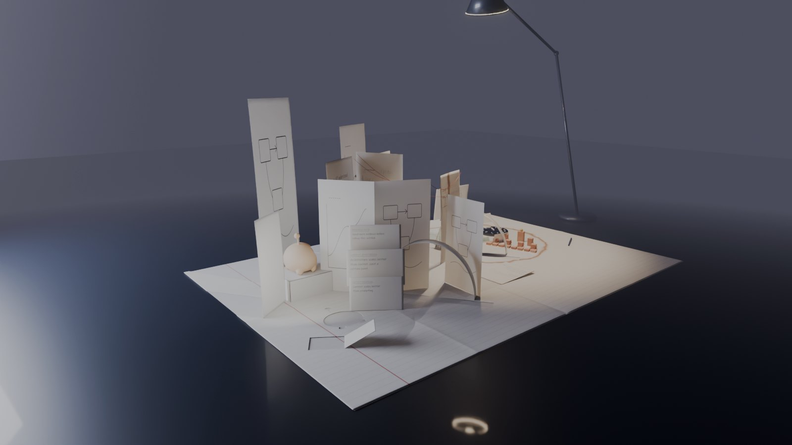
Después · el pliego sin bordes
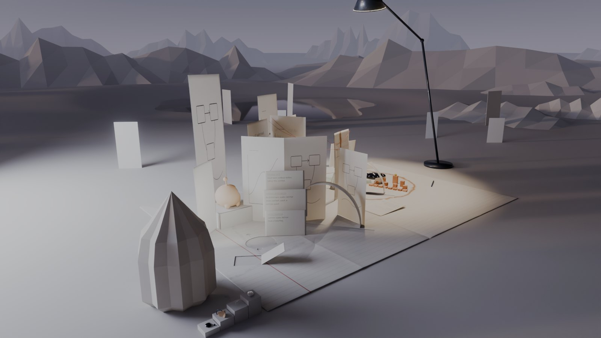
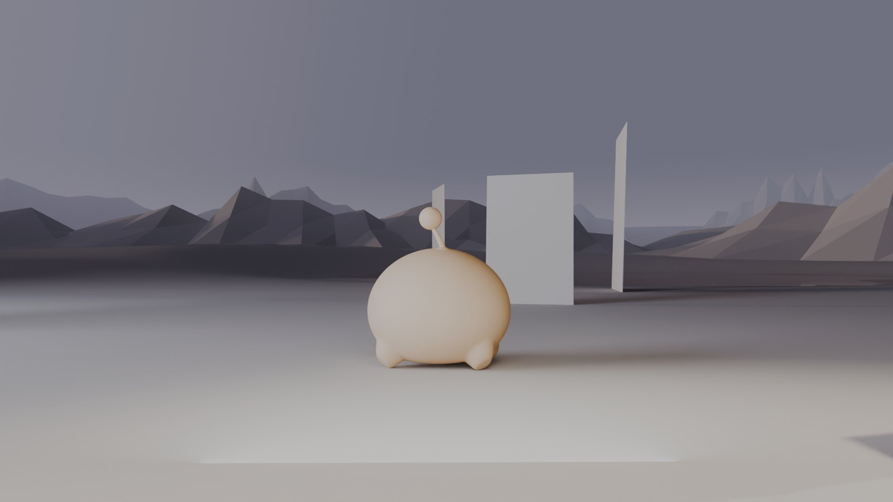
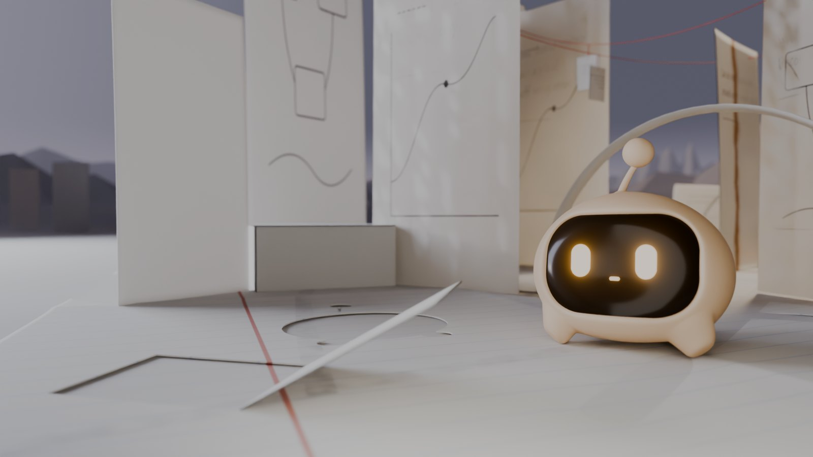
d3-home de la Entrega 1.5).Los lugares de Scope
Están fuera de lo escrito, en el papel en blanco junto al margen: Scope vive justo donde termina el trabajo de Álvaro y empieza lo que aún no existe. Responden con el propio escenario dónde vive, qué guarda, qué investiga y qué hace cuando no hay nadie.
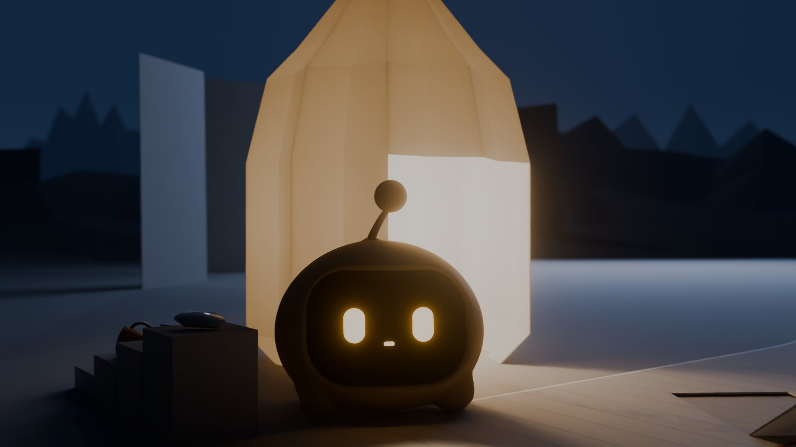
1 · dónde vive y descansa
La linterna · su casa
Un farol de papel plisado de unos 30 cm, con la puerta hacia el pliego y, dentro, el plato de porcelana donde se asienta. De noche, su propia luz atraviesa el papel (regla 4).
- Es el nuevo loader: antes de que llegues, solo se ve su linterna encendida en el horizonte nocturno. Cuando el mundo carga, sale por la puerta.
- Si te quedas mucho rato quieto en el margen, entra a descansar. Su luz sigue encendida y se asoma en cuanto te mueves.
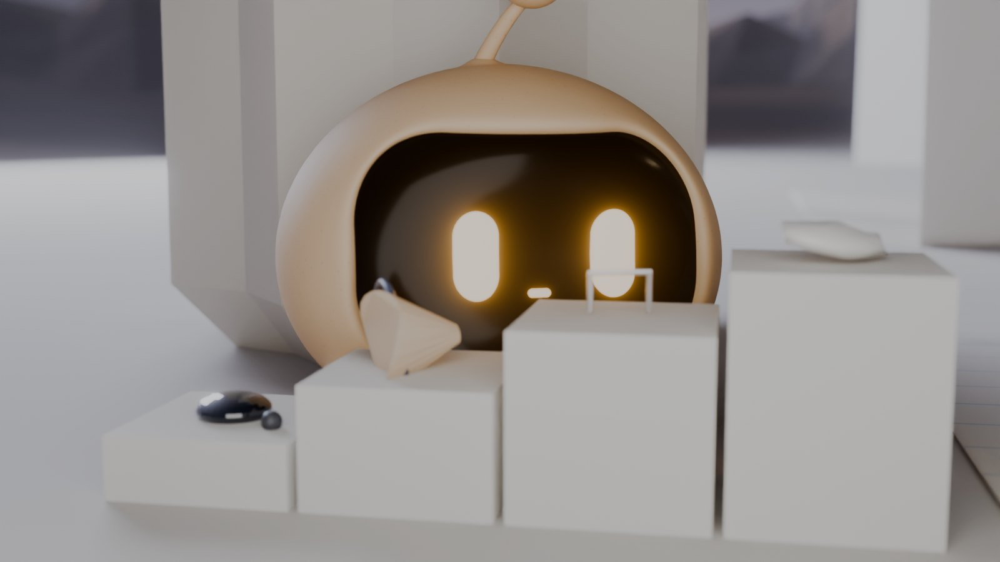
2 · lo que guarda
El gabinete · lo que ha encontrado
Escalones plegados con lo que ha recogido de la mesa de Álvaro: una gota de tinta seca, una viruta de lápiz, una grapa, una esquirla de una pieza que se rompió al cocerse y una miga de grafito. Sin ningún texto, el mundo cuenta que es una mesa de trabajo.
- Cuando no hay nadie, lo ordena: empuja con la cara la pieza que se ha movido.
- La visita se convierte en objeto: tras jugar el cuadro aparece la pelota de Tournamently; tras abrir MathView, un trocito de celadón.
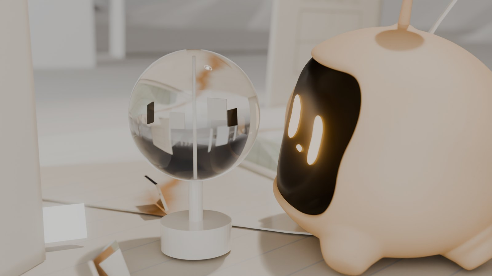
3 · lo que investiga y ha construido
El radiómetro · su experimento
Un molinete de luz: aspas blancas y negras dentro de una ampolla de vidrio. Es un radiómetro de Crookes, física real. Está en el borde del círculo, rodeado de tres esquirlas de porcelana que Scope ha colocado como espejos. Quiere entender la luz que convierte el papel en porcelana.
- Con la lámpara gira despacio; cuando Scope lo mira, su luz lo acelera. Es el mismo canal con el que activa todo lo demás: nunca otro poder.
4 · el lugar que considera especial
La atalayaDetrás del borde norte del pliego, sobre el papel en blanco, desde donde se ven el horizonte y el lago. Va al atardecer, y también cuando llevas un rato quieto lejos de él. Mira las cordilleras.
5 · lo que hace cuando no hay visitantes
Las huellasRastros suaves de grafito gastados en el papel: de la linterna a su sitio del margen, del margen al mirador, de la linterna al gabinete. Existen porque los recorre cada día. Son una textura, así que no cuestan nada.
Lo que da vida al mundo, sin relación con el portfolio
| Lugar o acontecimiento | Qué ocurre | Causa (nada va por temporizador) |
|---|---|---|
| Las hojas en blanco | Unas 45 de pie en el anillo medio: un bosque de preguntas sin escribir. Si Scope ilumina una, no aparece nada; ladea la cabeza y sigue | Su luz; que no haya nada escrito también es información |
| El lago de tinta | Refleja la lámpara; de noche, su orilla es lo más oscuro del mundo | La mesa, hecha paisaje |
| El polvo en el cono de la lámpara | Motas que suben despacio, solo dentro de la luz | El calor de la bombilla |
| La linterna encendida a lo lejos | De noche, desde cualquier zona se ve dónde está su casa | Él está dentro |
| Las cordilleras al atardecer | La luz rasante dibuja sus pliegues | El sol bajo de cada zona |
Cómo se consigue la amplitud sin pagarla
| Anillo | Cómo | Coste previsto |
|---|---|---|
| Cercano · 0–2 m | Geometría completa, caminable, con luz horneada (lo de la Fase A) | Lo ya presupuestado |
| Medio · 2–10 m | Terreno de unos 6 000 triángulos; las hojas en blanco, una sola geometría instanciada; colinas con oclusión en los vértices; sin sombras | ≈ 12 000 tri · 4 llamadas · ≈ 150 KB |
| Lejano · 12–33 m | Mallas muy simples con niebla. Más allá de 25 m, opcional: un panorama prerenderizado por hora | ≈ 4 000 tri o ≈ 150 KB |
| Cielo y aire | Gradiente por hora, franja de horizonte y niebla con la misma curva | Despreciable |
| Entorno total: ≤ 20 000 triángulos, ≤ 8 llamadas y ≤ 400 KB. Es un objetivo y se mide en 2.0-A. El presupuesto global de la Fase A no cambia. | ||
- El horizonte, siempre a la vista en las paradas del recorrido: en el tercio superior (en el cuarto superior en el móvil).
- Ninguna cámara mira hacia abajo más de 30°, salvo las vistas generales.
- El borde del pliego nunca se ve recto y solo: siempre lo cruza algo (una hoja, una huella, la linterna).
- El lago, sin reflejos planares: un material muy brillante que refleja el cielo y un brillo falso de la lámpara.
Scope y su mundo: interacciones físicas
| Acción | Dónde | Cómo |
|---|---|---|
| Sale de la linterna cuando llegas, entra a descansar y se asoma si te mueves | Linterna | Paso, Fit y Peek (capa procedural) |
| Ordena una pieza del gabinete | Gabinete | Nudge (aprobado) |
| Acelera el radiómetro con la mirada | Radiómetro | Su luz |
| Ilumina una hoja en blanco y no encuentra nada | Anillo medio | Luz + Tilt |
| Mira el horizonte al atardecer | Atalaya | Settle + mirada larga |
| Se sube a MathView, a las gradas o al dial, y empuja la pelota | Distrito | Paso y Nudge |
| Te espera en la puerta de un lugar importante y te enseña algo que no has visto | Entradas de zona | Compañía (una vez por zona) |
Todo esto pertenece a «Vida propia» y «Curiosidad», por debajo de la compañía: nunca interrumpe tu navegación ni tu lectura. Cada lugar suyo tiene reacciones propias: en su linterna descansa más hondo; en el gabinete le llama la atención lo nuevo; en la atalaya atiende al horizonte, y no a ti.
Proyectos y contacto
Se conservan, y ganan sentido- Las instalaciones siguen en el círculo, en el centro del pliego. Ahora son los lugares más especiales de un mundo que ya existe.
- El contacto, al pie de la lámpara, queda sobre el papel en blanco: fuera de lo escrito, en el sitio de Álvaro, mirando al lago de noche.
- Las peanas libres siguen en el anillo tostado. Y si el círculo se queda pequeño, el papel en blanco es, literalmente, espacio para lo que vendrá.
- Navegación accesible, URLs, historial, vista de lectura y contacto inmediato: sin cambios.
Hoja de ruta
Lo que cambia en la Fase B- 2.0-A incluye el entorno en bloque (los tres anillos, el cielo por hora, la niebla y las reglas de composición). Es lo primero que se juzga.
- 2.0-B añade los lugares de Scope a su memoria y a su vida propia. El loader pasa a ser «Scope dentro de su linterna».
- 2.0-C añade el pase de arte del entorno: cordilleras de papel plegado de verdad, el lago y el etalonaje por hora.
- 2.0-D, E y F no cambian de alcance.
Lo que todavía no está bien en estos estudios
| Pieza | Problema | En la Fase B |
|---|---|---|
| Cordilleras | El facetado del bloqueo puede recordar a un paisaje «low poly» de videojuego | Tiras de papel plegadas en acordeón con bordes limpios, translucidez a contraluz y menos picos, pero más grandes (2.0-C) |
| Terreno | Demasiado uniforme de cerca | Grano, huellas y un poco más de tono en las dunas |
| Lago | Apenas se lee en el plano general | Más superficie a la vista desde las paradas, y el reflejo de la lámpara |
| Color | Demasiado gris al amanecer | Etalonaje por hora hacia la paleta de la biblia |
| Scope de noche | Casi en silueta (el contraluz es intencionado) | En tiempo real, la capa de presencia le da un rebote cálido |
La propuesta de la Fase A se mantiene, con tus respuestas incorporadas
world.jsonEl mapa vista cenital · metros reales del mundo aprobado
Un solo mundo continuo. Se camina bajo la galería y bajo el rizo, nunca por encima: así basta con ampliar el mapa caminable 2D actual a la mesa, sin navegación por capas. Pasa el puntero o el foco por una zona para ver su ficha.
El recorrido, desplegado altura, hora y apertura a lo largo de la ruta
El corte «estira» la S en una línea, con la misma escala en horizontal y en vertical. Arriba se ve cómo cambia la hora del día de una zona a otra, y en medio, la arquitectura con Scope a escala (15 cm). Abajo, la apertura: el recorrido alterna espacios abiertos e íntimos para que nunca sea un pasillo uniforme.
Las siete zonas una función, una escala y una hora cada una
Ninguna es una pantalla: cada una se ve desde las vecinas y termina en arquitectura, no en un corte. Todo lo que reacciona tiene una causa visible (te acercas, Scope lo mira o lo abres); nada se mueve por temporizador, como exige el canon (BEHAVIOUR.md).
Proyectos: experiencias, no folios sistema común, arte propio
He comprobado qué existe de cada proyecto antes de diseñar. Tournamently se puede probar de verdad desde ya: su web en vivo responde y hoy se deja incrustar, y su motor de cuadros es un módulo puro y probado. De MathView no he encontrado código ni demo, así que su instalación será una representación señalada como tal hasta que me los pases.
Tres sellos, siempre visibles
Los calcula el sistema a partir del manifiesto, nunca se escriben a mano. Así una escultura no puede hacerse pasar por demo.
Tournamently, jugado de verdad
El sistema: un manifiesto por proyecto
- Añadir un proyecto: un archivo de manifiesto y sus recursos reales. Con el arquetipo, la pieza se genera en el navegador (forma + esmalte + emblema) y se cuece en una peana libre. Sin Blender ni volver a exportar el mundo.
- Proyectos principales: un módulo de instalación propio con el mismo contrato (
load · approach · open · close · scopeSpots · dispose). - Comprobación automática: peana libre, textos alternativos, enlaces que responden, sitios de Scope sobre suelo caminable y sellos coherentes.
Scope, compañero independiente y cerca, nunca pegado
Hoy llega siempre tarde: solo reacciona cuando la cámara ya ha llegado a la parada, y avanza a 13 cm/s. Tampoco sabe si se le ve ni a qué distancia estás. La 2.0 le da un modelo de compañía explícito, memoria de la sesión y un paso propio. Todo pasa por el canon: sin manos, sin hablar, sin pedir atención, y con el reposo como estado dominante.
Prioridades
Qué manda cuando dos cosas chocanNunca se corta un salto en el aire ni un clip a medias: se termina y luego se cambia. Leer manda: con una ficha o nota abierta, no se desplaza ni hace gestos.
Distancia
Bandas de compañíaUn cambio de zona
Se pone en marcha con la cámara, no detrás de ellaMemoria de la sesión
Lo que recuerda, y para qué- Zonas visitadas → la primera vez descubre (LookAround); al volver va directo a su sitio y mira lo que abriste allí.
- Lo que has abierto → se adelanta para enseñarte lo que no has visto, una vez por zona.
- Últimos 4 clips → nunca dos gestos seguidos de la misma familia; pesos ×0,25 y ×0,6 para el último y el penúltimo.
- Tus clics → al tercero seguido, solo un parpadeo. El canon no premia la insistencia.
- Si ya te ha mirado por inactividad → una sola vez por zona, sin ir a más.
Clic sobre Scope
La misma reacción, leída en su contexto| Contexto | Reacción |
|---|---|
| Normal | Se gira hacia ti → ClickReaction → vuelve a lo que miraba |
| Estás leyendo | Solo BlinkDouble, sin moverse |
| Va de camino | Se para, se gira, Bounce corto y sigue |
| Sobre el dial | ClickReaction y un Bounce en el centro: está en casa |
| Mientras escribes | Mira la nota y a ti; ningún clip largo |
Locomoción · propuesta para aprobar
«Pasito con balanceo»: dos pasos de la marcha de trote (13 cm/s)Mueve solo huesos aprobados (root, hop, squash, body, patas). El modelo, el rig y el GLB quedan intactos. Se juzga en una página de laboratorio, junto al Bounce actual.
Mejores arcos, pero cambia el GLB de producción (+30–60 KB). Solo si la A no convence. Lo mismo para Nudge (empujar con la cara, pose ya explorada en la Entrega 1.5) y Settle.
El lugar de encuentro al pie de la lámpara, sobre la mesa de Álvaro
Se baja del pliego por la esquina doblada. En el círculo de luz de la mesa hay una nota en blanco y el lápiz. Escribir aquí es dejar una pregunta nueva: la nota acaba de pie en el campo, como cerraba la biblia. Contactar sigue siendo inmediato: el correo está en el HTML desde el primer fotograma y «Contacto» siempre está en la barra.
Al pie de la lámpara
Escríbeme.
Si tienes un proyecto, una clase o una pregunta que no te deja tranquilo, cuéntamela.
Maqueta del panel HTML (borrador de texto para revisar contigo).
Correo tomado de .env.example → confírmame que es el público. LinkedIn y GitHub: los enlaces que ya están en producción.
Prototipo: «Enviar desde mi correo» abre tu cliente de correo (mailto:). Es real y no simula nada. Producción: el /api/contact que ya existe (Resend).
El cierre de la nota solo se ve con un botón «Ver el cierre (demostración)». Nunca aparece un «Enviado» falso.
Técnica y presupuestos objetivos frente a lo verificado
Solo las técnicas que hacen falta. Lo más importante es hornear la luz: acerca la imagen a los renders y permite quitar una de las dos sombras en tiempo real. Como cada zona tiene su hora fija, se hornea por zona sin conflictos. Este equipo no tiene GPU, así que el rendimiento real se mide en tu ordenador en cada entrega.
| Medida | Objetivo 2.0 | Verificado 1.0 |
|---|---|---|
| Hasta interactuar (gzip) | ≤ 2,0 MB | ≈ 1,7 MB |
| Por zona (gzip) | ≤ 350 KB | — |
| Mundo completo (gzip) | ≤ 4,5 MB | 1,07 MB |
| Triángulos visibles | ≤ 200 000 | 66 000 + Scope |
| Llamadas de dibujo, escritorio / móvil | ≤ 120 / 80 | 93–116 |
| Memoria GPU, escritorio / móvil | ≤ 200 / 120 MB | sin medir |
| p95 gráfica integrada | ≤ 16,7 ms | sin medir (sin GPU aquí) |
| p95 Android medio | ≤ 33 ms | sin medir |
| Técnica | ¿Sí? | Por qué |
|---|---|---|
| Carga por zonas | Sí | Núcleo primero; vecinas cuando el navegador está libre; destino al saltar |
| Siluetas lejanas | Sí | El único LOD que aporta: el mundo se ve más allá del encuadre (unos 5 000 triángulos) |
| Instancias | Sí | Aula, gradas, galería y peanas: menos llamadas de dibujo |
| Luz horneada | Sí | Más parecido a los renders y una sombra menos |
| meshopt | Al final | Decoder ya en three; compresión solo al compilar, si se pasa de 3 MB |
| KTX2 | Aún no | Solo si las texturas pasan de unos 8 MB |
| Descargar zonas | Móvil | En escritorio cabe todo |
| Prerenders | Pocos | Vista de lectura, Open Graph y sin WebGL; nunca en lugar del mundo |
Hoja de ruta · Fase B seis entregas, cada una se aprueba en el navegador
Primero el esqueleto y el comportamiento, después el arte. La 2.0-A es una maqueta gris caminable: podrás juzgar el tamaño, el ritmo y las transiciones del mundo, y medir el rendimiento en tu GPU, antes de invertir en arte.
Mapa completo en volúmenes grises; 7 zonas y 21 paradas; índice, URL e historial; carga por zonas y siluetas.
✓ recorrido y saltos · ✓ teclado · ✓ p95 en tu GPU
Estados nuevos, compañía, espera, memoria y atajos; paso procedural; laboratorio de marchas.
✓ tests §4.10 · ✓ sesión de 10 min · ✓ cara 0 mm
Despertar, galería, campo, taller, libro por dentro y mirilla, con luz horneada.
✓ frente a los renders · ✓ presupuesto por zona
Manifiestos, arquetipo, peanas, gradas con el motor real, Tournamently incrustado, MathView y el dial.
✓ manifiestos · ✓ tests del motor · ✓ sellos
El rizo con las seis líneas completas; el aula y plegar tu pieza.
✓ sin WebGL · ✓ Scope espera mientras lees
Contacto, mailto:, cierre de demostración, vista de lectura completa y plan de integración en Next.
✓ contacto < 1,2 s · ✓ lector de pantalla · ✓ móvil real
Decisiones tus respuestas, y lo que queda
- Mundo ampliado: aprobado.
- MathView: dos repositorios públicos, ya inspeccionados. Es un visualizador de funciones complejas: |f(z)| y fase, ceros y polos, Mandelbrot y la función zeta.Su API apunta a un servidor de Azure que hoy no resuelve, así que no hay demo en vivo. Y el código no usa Matlab, aunque producción lo diga.
- Tournamently: el repositorio es público. Se copia
bracket.tscon su procedencia y se incrusta la web. - Contacto: correo, LinkedIn y GitHub confirmados.
- Docencia: FP de SMR y ASIR en GSD Guadarrama.En el aula, las piezas se unen con hilos, como una red. Producción dice «Software Development» y habrá que corregirlo.
- Locomoción: lo dejas a mi criterio, así que empiezo por la capa procedural.
- Acciones de Scope: aprobadas (Fit, Nudge y su luz).
- Configuración: aprobado excluir
docs/deltsconfigy de ESLint. Se hará al empezar la Fase B.
Lo que queda por decidir
- ¿Apruebas esta revisión? El pliego sin bordes, los lugares de Scope y los cambios en la hoja de ruta.Es la única desviación del lenguaje aprobado: la escala pasa de una mesa a un mundo de papel.
- MathView: ¿quieres volver a desplegar su API para que la instalación pueda abrir la aplicación de verdad?Si no, se queda con la representación de su método y los enlaces a los dos repositorios.
Referencias: lo que se conserva la dirección artística no cambia
Las zonas nuevas se construyen con el mismo lenguaje que ya aprobaste. Estas imágenes son el patrón: renders de Blender de las entregas 1.5 y fotogramas del prototipo 1.0.
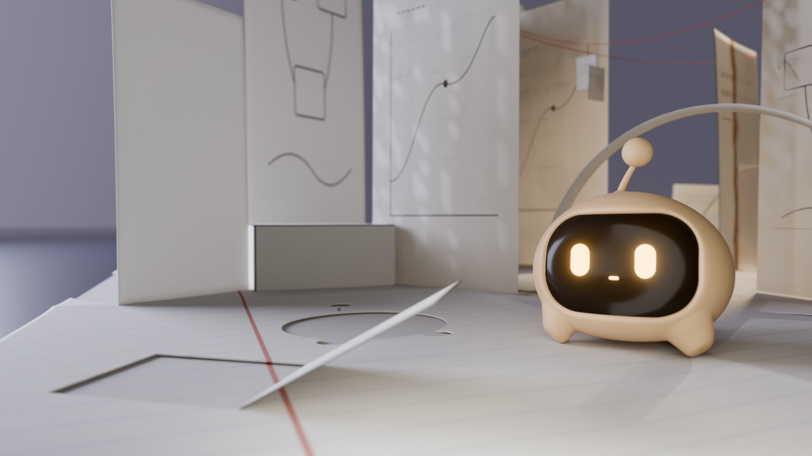
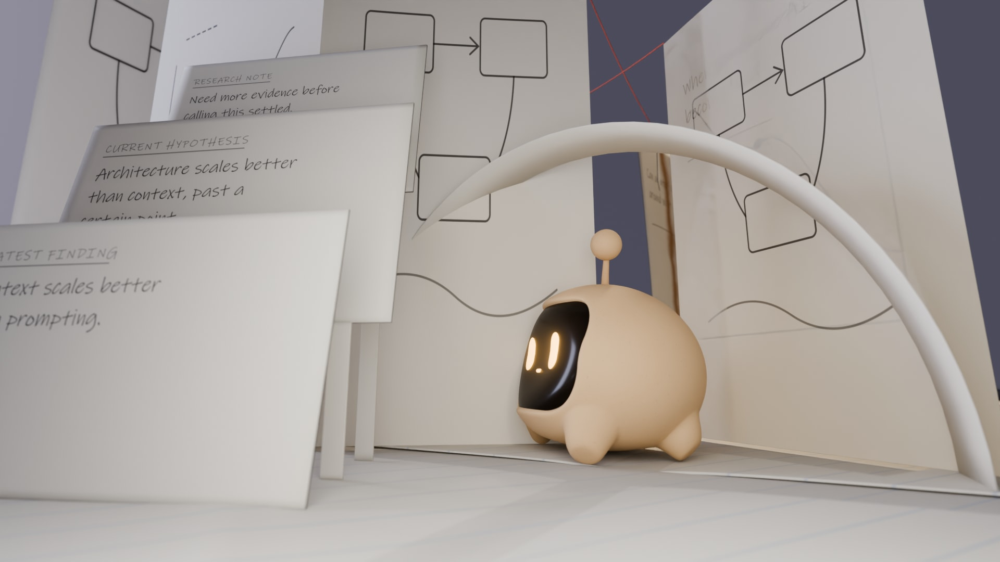
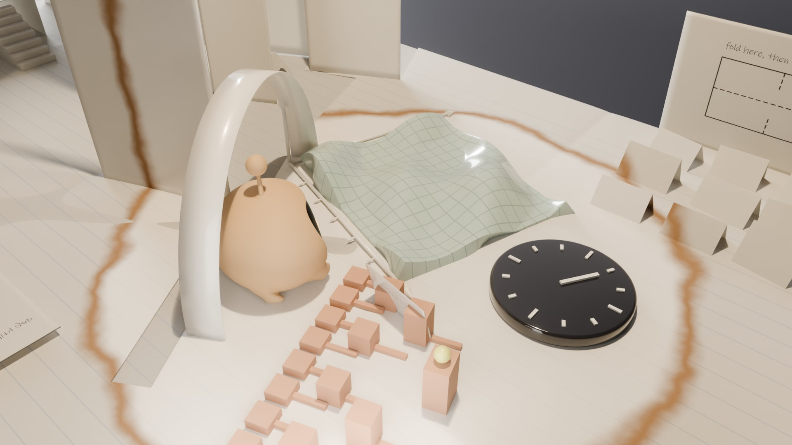
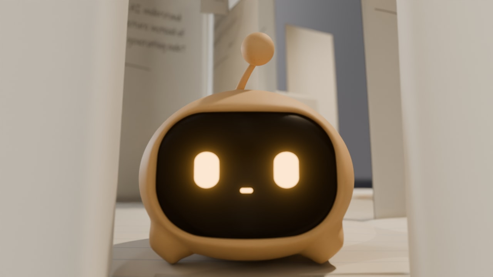
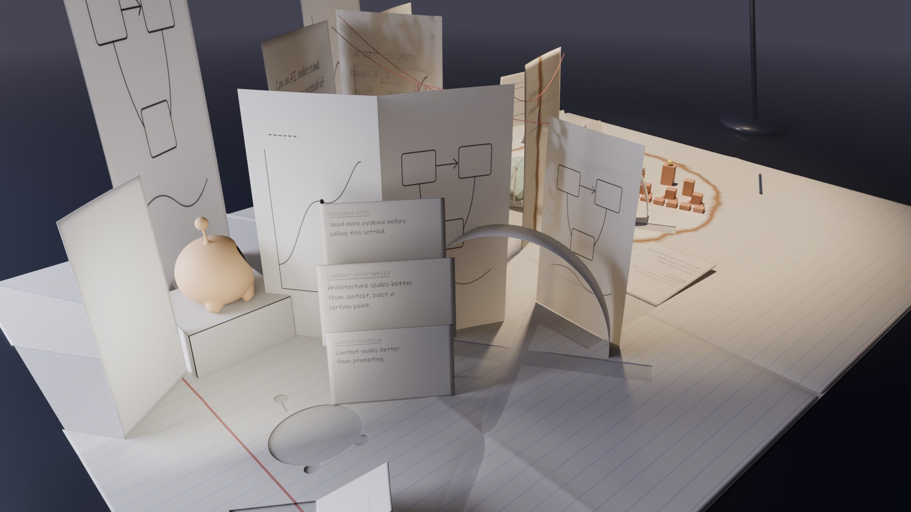
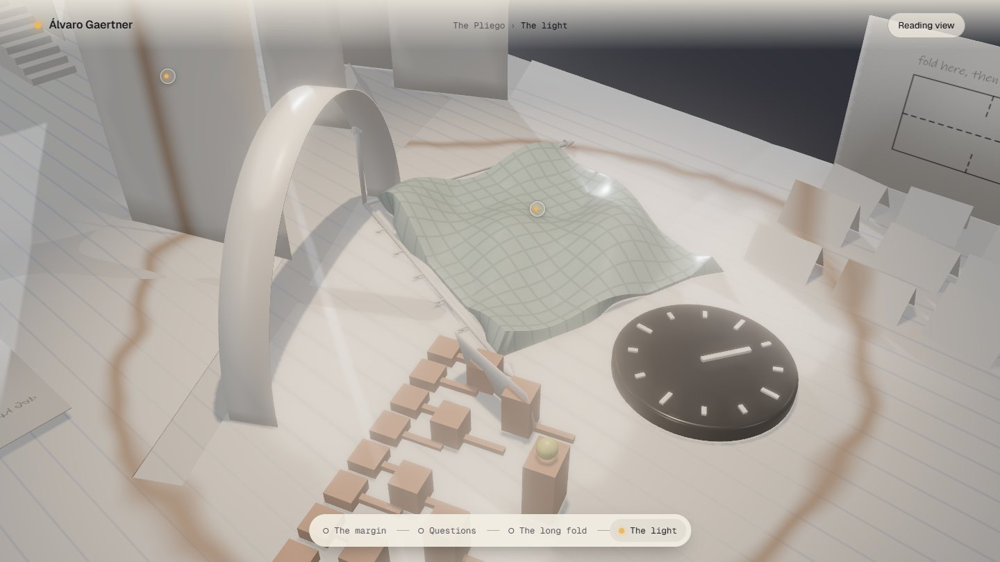
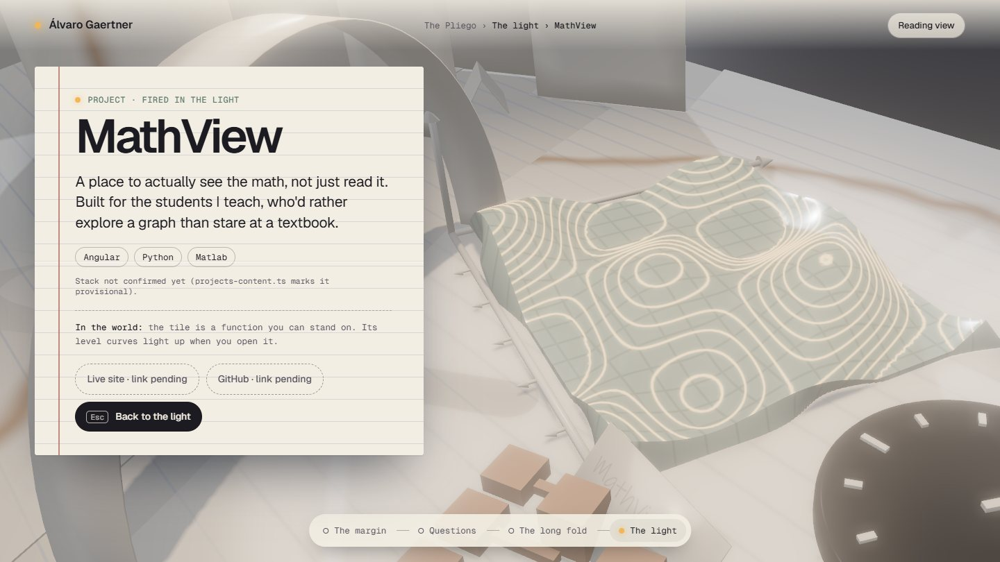
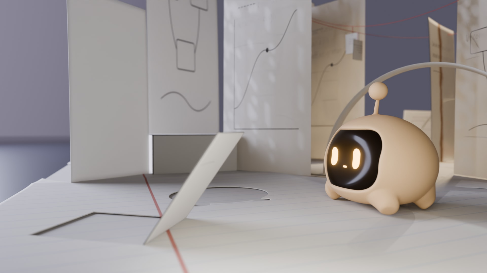
Documentos de esta fase: README · 01 auditoría · 02 mundo · 03 proyectos · 04 Scope · 05 contacto · 06 técnica · 07 Blender y hoja de ruta